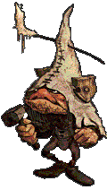

| Übersicht,
Allgemeines |
|
Täglich grüsst der Dämon (2  ) )
|
| Háril Glyndil (RIP) |
Miniquesten sind nett und hübsch *g* Aaaber, ein wenig Abwechslung wäre da schon von Vorteil.
11.11.04 22:03 Trauer niederer Dämon hat Piéròtéss Elcârnaé den Garaus gemacht!
11.08.04 22:54 Trauer niederer Dämon hat Piéròtéss Elcârnaé den Garaus gemacht!
11.07.04 10:18 Trauer niederer Dämon hat Piéròtéss Elcârnaé den Garaus gemacht!
Kleiner Hinweis :
Am 11.09 und am 11.10 war ich nicht on da ich weg war, falls jemanden die Lücke stört.
Mein Char baut keine Schneemänner. *g* Auch nicht wenn er wiederholt von diesem subersiven Kind darum gebeten wird, es passt einfach nicht ins rpg.
Dennoch kommt das einzige Quest das ich irgendwie bekomme immer am 11ten eines Monats und es ist immer das Schneemannquest. Ich meine so als running Gag sicher amüsant, aber einmal hatte es mich beim Endu ernten und einmal mit sehr vielen Waren erwischt. Auf Dauer wird es lästigt und sorgt dafür dass ich am 11.12. mich auf keinen Fall einloggen werde.^^ Zumindest hatte ich das blöde Vieh gestern fast getötet....
Für eine Anmerkung wäre ich dankbar. :-) |
12.11.04 8:01
|
|
| Brendan (RIP) |
Ich glaub, der steht auf das regelmäßige "Rendevouz"! |
12.11.04 8:07
|
|
| Háril Glyndil (RIP) |
Gleich und gleich gesellt sich gern? Ich sollte wieder mehr auf die Körperpflege meines Chars achten ;-) |
12.11.04 8:10
|
|
| Gavilan (RIP) |
Das ist ja lustig. :-D
Von den Unahnehmlickeiten mal abgesehen. |
12.11.04 9:28
|
|
| Nalon din Adun (RIP) |
Du hast halt immer einen Monat Zeit, drüber nachzudenken, ob du nicht doch mal nen Schneemann bauen willst ;)
Oder renn an jedem 11. halt immer nur mit Tierchen rum :) |
12.11.04 9:43
|
|
| Háril Glyndil (RIP) |
Stimmt Nalon. Aber was passiert nun, ich bereite mich auf den 11ten vor, und werde den Dämon killen.
Wenn man das sehr eng sieht wäre das eine Art Exploit....
Aber am 11.12. ist der Kerl dran^^ Darauf kann er sich verlassen, das ist mir dann egal ob das unfair ist.
Und nein, Schneemänner zu bauen passt nicht zu meinem rpg, da werde ich konsequent bleiben. so schmerzhaft es ist :-/ |
12.11.04 9:46
|
|
| Gavilan (RIP) |
toi, toi toi ;-) |
12.11.04 11:25
|
|
| Freya san Gordar (RIP) |
ist dein Char nicht lernfähig? Du bist jetzt 3x verhauen worden. Bau halt mal den Schneemann, dann haste Ruhe^^ |
12.11.04 11:26
|
|
| Dracon Darknight (RIP) |
Ich hätt dden quest gern mal wenn ich mit ner Kaveralie armee auf nen feld steh *gg*.
Bzw hätte ich den überhaupt gern öfters :/ |
12.11.04 11:31
|
|
| Mia von Tacheless (RIP) |
hast doch einen monat zeit, kampfzeugs zu sammeln... ich würd am nächsten 11. direkt mal einloggen, bis an die zähne bewaffnet, mit den richtigen chars im schlepptau, und am besten jemanden im unterstützermodus mit mir durch die pampa schleifen, und schaun ob der dann auch im quest noch stützt *g*
vielleicht killste ja als erste der scherbe nen dämon? |
12.11.04 11:45
|
|
| Lancelot (RIP) |
ich sach ja die zufallsquesten sind kacke |
12.11.04 11:46
|
|
| Fáin Cortez (RIP) |
mia, glaube da war jemand schon schneller... |
12.11.04 11:53
|
|
| Balëbréthilion Târmundor (RIP) |
Eine fremde person wird im Quest definitiv nicht stützen, denke ich.
Wenn du bei einem Kampfquest bist wirst du soviel ich weis ähnlich wie bei nestangriffen auf unereichbare Koords gesetzt. Somit steht der andere nichtmehr mit dir auf dem gleichen Feld... |
12.11.04 15:16
|
|
| Háril Glyndil (RIP) |
Freya Thorbjørnsdoter
ist dein Char nicht lernfähig? Du bist jetzt 3x verhauen worden. Bau halt mal den Schneemann, dann haste Ruhe^^
Wird ja nicht immer das gleiche Kind sein, und genaugenommen sind da sicher viele Kinder die Schneemänner bauen....ich versuche das mit den Augen meines Chars zu sehen...und wenn das weiter im monatlichen Rhytmus bleibt ist der Karmaverlust ertragbar |
12.11.04 15:46
|
|
| Emlygbachor o Dúathheithol (RIP) |
jo nur die ap-kosten und gs-kosten sind halt etwas unerträglicher ich wollt schon immermal wieder diese quest haben seit dem ich weiss was bei eienem nein passiert |
12.11.04 17:33
|
|
Support
 |
>> Für eine Anmerkung wäre ich dankbar. :-)
Es sollten wohl in der Tat mehr verschiedene sein, ja ;-)
Falls Du die zeitliche Sache meinst, die ist mit großer Sicherheit Zufall, wenn auch ein sehr netter ;-) |
12.11.04 19:39
|
|
| Háril Glyndil (RIP) |
Ich muss leider gestehen ich glaube nicht an Zufälle. Warten wir mal den 11.12. ab ^^
Dann bin ich gerne zu weiteren Diskussionen bereit. ;-) |
12.11.04 22:20
|
|
| Defi Nition (RIP) |
Nun Aron baut nun Extra für dich die Quest am 11.12 ein *g* |
12.11.04 23:52
|
|
| Elder von Adlerfeste (RIP) |
ne er modifiziert sie extra so das am 11.12 auf einmal 2 Dämonen kommen wenn Piéròtéss auf einen vorbereitet ist... |
13.11.04 0:07
|
|
| Nemo van Delving (RIP) |
*fg* |
13.11.04 2:04
|
|
Support
|
>> Dann bin ich gerne zu weiteren Diskussionen bereit. ;-)
Wenns wieder auftritt isses trotzdem Zufall ;-) Wobei das statistisch schon sehr unwahrscheinlich ist, weswegen ist das mal als wohl nicht passierend einstufe ;-) |
14.11.04 13:55
|
|
| Kassandra Alfiriel (RIP) |
*seufzend mit nem eimer zum reste aufsammeln hinter ihr herrennt* |
14.11.04 15:21
|
|
| Infinity (RIP) |
Das kommt davon, wenn man kleinen Kindern die Hilfe verweigert ... is aber auch echt böse von Dir, du kannst doch nicht einfach weiterlaufen, wenn son kleines, armes Ding von soner riesigen Schneekugel fast überrollt wird, bei dem Versuch den Schneemann zusammenzusetzen *g* |
14.11.04 15:22
|
|
| Dracon Darknight (RIP) |
Oder man erklärts RPG so dass sie mit den Erzdämonen Paktiert/Verwandt ist. Weil sie nen Dämon beschwören kann, man das entsprechende Zeichen sah und ihr deshalb die Hilfe verweigerte. |
14.11.04 22:19
|
|
| Spelzdinkel i Cirion (RIP) |
Verletzung durch Schneekugel: Am 12.11. gegen 13.15 Uhr wollten ein 7-jähriger Schüler und dessen Freund in deren Wohnort Gnesau, Bez. Feldkirchen, einen Schneemann bauen. Die Buben rollten Schneekugeln einen Hang hinunter. Als eine der Kugeln, die bereits einen Durchmesser von ca. einem Meter erreicht hatte, zu Rollen begann, stellte sich der 7-Jährige vor die Kugel, um sie anzuhalten. Der Bub wurde von der Kugel, deren Gewicht etwa 200 Kg betrug, überrollt und darunter begraben. Der Freund grub sofort das Gesicht frei, und der durch das Schreien der anwesenden Kinder alarmierte Vater befreite schließlich seinen Sohn. Das Kind erlitt an den Beinen Verletzungen unbestimmten Grades und wurde von der Flugrettung RK I ins LKH Villach geflogen. Bearbeitende Dienststelle: GP Patergassen.
Bitte überleg dir nicht doch noch einmal ob du das nächste Mal dem Kind beim Schneemannbauen nicht doch helfen willst. |
16.11.04 9:36
|
|
| Háril Glyndil (RIP) |
Jetzt erst recht nicht? Oo Vielleicht bin ich die arme Elfe die UNTER der Schneekugel liegt? |
16.11.04 11:08
|
|
| Leroy of Etruria (RIP) |
armes kleines Piéròtéss :p |
18.11.04 9:17
|
|
Daerwain Saelhugion
 |
Würd ich an deiner Stelle auch nicht machen Piero, da so ein Schneeball immun gegen deine vergifteten Dolche ist ;-) |
18.11.04 9:51
 |
|
| Shadgan Dragaroth (RIP) |
Vorallem frag ich mich wo das war. Auf der Eisinsel? Wenn nicht is es schon komisch das nen Kind nen Schneemann bauen will wo garkein Schnee leigt ^^ |
22.11.04 0:12
|
|
| Athândira Anúldor (RIP) |
11.12.04 9:08 SIEG Piéròtéss Elcârnaé hat zum ersten mal niederer Dämon besiegt!
*mal wieder hochhieft* |
11.12.04 22:17
|
|
| Middyn Faraldar (RIP) |
welch zufall *lach* |
11.12.04 22:54
|
|
| Dracon Darknight (RIP) |
Naja Rüste dich schonmal nächstes monat kommt der Zweite ;) |
11.12.04 23:30
|
|
| Falk Spiegelfels (RIP) |
Kann man das Mädchen eigentlich adoptieren? *fg* |
11.12.04 23:55
|
|
| Dracon Darknight (RIP) |
Nö aba Pierotess hats es eindeutig für sich gepachtet :/ |
12.12.04 0:03
|
|
| Nemo van Delving (RIP) |
rofl das gibts doch gar nicht, also wenn das noch Zufall ist dann sollt ich´s mal mit Lotto probieren :D |
12.12.04 0:40
|
|
| Tyxaro von Ingham (RIP) |
LÖÖÖÖÖÖÖÖÖÖÖÖÖÖÖÖÖÖÖÖL
ja ja ja Aron,...du hast ihn aufem Gewissen...
*lacht*
also ich würds auch mit Lotto versuchen :D |
12.12.04 0:45
|
|
| DeWitt (RIP) |
Schlimm, das is einfach nur Schlimm...
Das arme Schneemannbaumädchen^^
Aber Piéròtéss, möglicherweise kommt der jetzt nicht mehr, wo du ihm seine Lektion gelehrt hast...
(Trotzdem, Vorsicht vor Nachsicht, die nächsten drei Monate am 11. schwerst Bewaffnet rumlaufen) |
12.12.04 1:20
|
|
| Dinanoonwen (RIP) |
Was mich interessiert, Piero wieviel hast du von alle dem was du mit hattest verbraucht?
Harter Kampf?? |
12.12.04 19:10
|
|
| Bogan Feuerherz (RIP) |
auf jeden fall wett ich die hat sich ernsthaft darauf vorbereitet *gg* |
12.12.04 22:20
|
|
| Baene (RIP) |
Das vermute ich auch *g* |
13.12.04 1:04
|
|
| Háril Glyndil (RIP) |
*hüstel* Ihr wollt gar nicht wissen was das gekostet hat *kicher*
Aber ich rechne fest mit Arons Gnade..... nächster Monat dann ein flinker Dämon oder so ^^
Dann sind meine Einzelteile wieder wie bereits bekannt über eine 3x3 Meter grosse Schneefläche verteilt.....
Wetten werden noch angenommen...
Aber prinzipiell fand ich es nett dem Dämon dann doch zeigen zu können wo der Hammer hängt *g*
Zwischenstand 3:1 für den Dämon. Aber meine Rache hatte ich |
13.12.04 10:10
|
|
| Bogan Feuerherz (RIP) |
Du hättest lieber Lotto spielen sollen als Sw *gG* |
13.12.04 11:27
|
|
| Allen von Arandor (RIP) |
"was machen wir heute abend brain?" ...
"genau das selbe wie jeden abend pinky, wir bereiten uns auf den dämonenkampf vor"
^^ |
13.12.04 14:37
|
|
| Raphael (RIP) |
Einfach nur geil :) |
13.12.04 14:42
|
|
| Dinanoonwen (RIP) |
DAS wär doch mal n Thema für so einen Comix...
*fg* |
13.12.04 16:25
|
|
| Lancelot (RIP) |
@ piro: von nun an lauerst du dem dämon auf und nicht mehr umgekehrt :-)
wie isn das quest, dass dich immer in diesen kampf zwingt?
und aro... dein tipp mit dem zufall war wohl auch merh ins blaue, wa? *hehe |
13.12.04 16:59
|
|
| Freya san Gordar (RIP) |
Ihr seht ein kleines Kind, das verzweifelt versucht, einen Schneemann zu bauen. Es schafft es einfach nicht, der Schneemann rollt immer wieder davon. Wollt ihr helfen?
1. 8 AP geben
2. nichts geben
1. +1 Schmeemann
2. Todeskampf: 1 niederer Dämon |
13.12.04 17:21
|
|
| Viala (RIP) |
dazu sei gesagt: Pierotess ist rpgtreu und hilft kleinen Kindern einfach nicht *gg* |
13.12.04 18:49
|
|
| Kassandra Alfiriel (RIP) |
heyheyhey, das kann ich nu nich auf meiner verlobten sitzen lassen:-) nur so kindische albereien wie schneemann bauen dazu würd sie sich net herablassen, aber allgemein kleinen Kindern würde sie wohl durchaus helfen:-) |
13.12.04 19:51
|
|
| Davatar (RIP) |
wohl eher umgekehrt *fg* |
14.12.04 9:52
|
|
| Bluemchen (RIP) |
Heute kam das Quest zu mir............. ich war vorbereitet....hab mir nochKits und ziggis geben lassen..................und dann.............dem Kind geholfen aus Versehen, naja, war eh besser wahrscheinlich :O) |
14.12.04 11:50
|
|
| Emlygbachor o Dúathheithol (RIP) |
lol |
15.12.04 0:21
|
|
| Jâhiera Tarán (RIP) |
"aus Versehen"
jaja^^ |
15.12.04 15:17
|
|
| Dinanoonwen (RIP) |
Bluem: Feigling und "Ans-Leben-Klammerer" *fg*
|
15.12.04 16:58
|
|
| Frerin Orclegs (RIP) |
*böse grinst*
Blümchen ist Paktierer. Er wußte, dass er einem Dämon begegnet und ist seinem Gebieter lieber aus dem Weg gegangen als sich mit ihm in einem Duell zu messen ;)
*chichi*
für alle dies nicht trennen können! DAS WAR EIN SCHERZ! Und außerdem nicht IG |
15.12.04 17:44
|
|
| Bluemchen (RIP) |
nunja, ich bin ertappt^^
ich halte es fuer nach wie vor nicht "astrein" dass ich ein quest sehen kann und - bevor ich eine eingabe mache - von anderen spielern noch erreichbar bin - egal ob man mir dann wolpis oder ziggis, kits und ed´s zusteckt. aber in dem fall waer es wohl gut gewesen und ich hatte mich echt getraut mich zu trauen, aber mein feiges ueber-ich hats verhindert wahrscheinlich :O)
|
16.12.04 7:48
|
|
Slam ODR
 |
Wenn ich auch zeitlich genau wüsste wann die Quest wieder mal zu mir kommt würde ich nen Dämon beschwören.
Sollen die doch gegeneinander kämpfen :-> |
16.12.04 17:25
|
|
| Dracon Darknight (RIP) |
k beschwör einen , nur bete das dich kein Konvent erwischt ;) |
16.12.04 17:40
|
|
| Bogan Feuerherz (RIP) |
wenn er nich damit plündert weis es jakeiner ggg |
16.12.04 17:44
|
|
| Dracon Darknight (RIP) |
Klar wenn ihn ein feind von ihm gleich nach dem Quest angreift und den ND sieht ;) |
16.12.04 18:45
|
|
| Middyn Faraldar (RIP) |
gut, is natürlich ein äußerst wahrscheinlicher fall dass das eintritt ;) |
16.12.04 23:41
|
|
| Bogan Feuerherz (RIP) |
Vl krieg ich ja nächsten Monat wieder nen Hai ab *gg* |
18.12.04 11:43
|
|
Übersicht,
Allgemeines
|